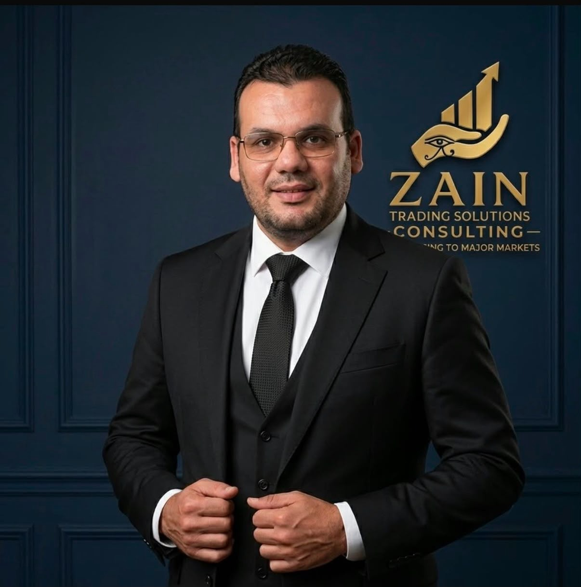

Ahmed Rabie
Founder & Lead Consultant – Oilfield & Energy
With over 25 years of hands-on experience in oilfield services, Ahmed is the driving force behind Zain Consulting. His career at Emirates Western (EW) spanned from field operations to strategic business development, where he played a pivotal role in securing over $190M in major contracts with ADNOC Group and other NOCs.
- Core Expertise
- Market Entry Strategy, Tender & Bid Management, Prequalification, Strategic Partnerships, Technical Advisory (Cementing, Stimulation, Coiled Tubing).
- Key Credentials
- 25+ years in oil & gas, Proven commercial success, Deep understanding of NOC procurement.